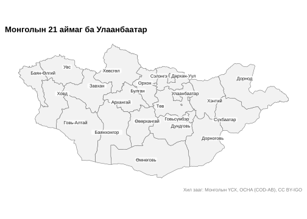
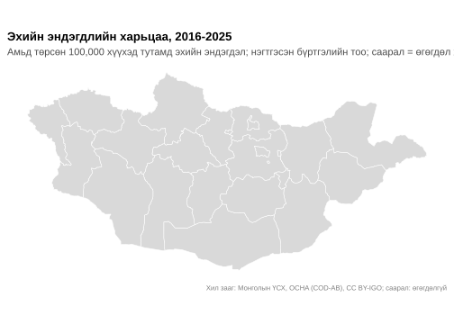
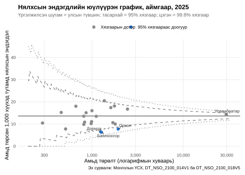
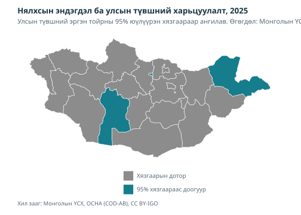

library(mongolstats)
library(mongolmaps)
library(dplyr)
library(ggplot2)
# Шалгасан сургалтын туслах функцүүд багцад дагалдах бөгөөд кодыг нь үзэж болно.
source(system.file("examples", "analysis-helpers.R", package = "mongolstats"), local = TRUE)
source(system.file("examples", "plot-style.R", package = "mongolstats"), local = TRUE)Тойм
Газар зүйн шинжилгээ эрүүл мэндийн тэгш бус байдлыг олж, арга хэмжээг чиглүүлэхэд тусална. Энэ заавар аймгийн түвшний эхийн болон нялхсын эндэгдлийн хоёр үзүүлэлтийг зураглана. Тоог шалгах, жижиг тоог нэгтгэх, тодорхойгүй байдлыг харуулах, тогтмол өнгийн ангиллын оронд юүлүүрэн графикаар харьцуулах алхмыг үзүүлнэ.
Хил заагийн өгөгдөл авах
mongolmaps засаг захиргааны бүх түвшний хил зааг агуулдаг. Нэгж бүр ҮСХ-ны кодтой тул mongolstats хүснэгтийг нэрээр бус, кодоор холбоно.
aimags <- mn_aimags() # 21 аймаг ба Улаанбаатар
aimags |>
sf::st_drop_geometry() |>
select(name, nso_code, iso_code, area_km2) |>
head()
#> # A tibble: 6 × 4
#> name nso_code iso_code area_km2
#> <chr> <chr> <chr> <dbl>
#> 1 Ulaanbaatar 511 MN-1 4736.
#> 2 Dornod 421 MN-061 123523.
#> 3 Sukhbaatar 422 MN-051 82321.
#> 4 Khentii 423 MN-039 80743.
#> 5 Tuv 341 MN-047 73986.
#> 6 Govisumber 342 MN-064 5540.
mn_map(aimags, label = TRUE, title = "Mongolia's 21 Aimags and Ulaanbaatar") +
analysis_map_theme()
Бусад түвшин мөн адил ажиллана: mn_regions(), mn_soums(), mn_ub_districts(), mn_khoroos(). mongolstats-ийн өөрийн geoBoundaries туслах mn_boundaries() болон нэрээр холбох функцүүдийг mongolmaps-аар орлуулахыг зөвлөж, хуучирсанд тооцсон.
ҮСХ-ны хүснэгтийн газар нутгийн код
ҮСХ-ны Region хэмжээс түвшнүүдийг хольдог: "0" нь улсын дүн, "1"–"4" нь эдийн засгийн дөрвөн бүс, "5" нь Улаанбаатар бүс, гурван оронтой код нь аймгууд. mn_join() аймгийн түвшнийг үлдээж, бусдыг хасна. Эрүүл мэндийн олон хүснэгт Улаанбаатарын тоог зөвхөн "5" бүсийн кодод хадгалж, аймгийн түвшний "511" кодыг хоосон үлдээдэг. mn_join() үүнийг таньж, мэдэгдэл өгөөд нийслэлийн утгыг бүсийн мөрөөс авдаг тул дахин кодлох шаардлагагүй.
Жишээ судалгаа: эхийн эндэгдэл
Эхийн эндэгдэл ховор: Монголд жилд хэдэн арваар бүртгэгддэг бөгөөд ердийн жилд ихэнх аймагт нэг ч тохиолдол бүртгэгдэхгүй. Нэг оны аймаг бүрийн эхийн эндэгдлийн харьцаа ихээхэн тогтворгүй байж болно. Ижил хуанлийн 10 хүртэлх оныг нэгтгэж, бүрэн бус тоог дутуу хэвээр үлдээн, нөхцөлт Пуассоны интервал тооцно. Эхийн эндэгдэл гэдэг нь жирэмсэн үед эсвэл жирэмслэлт дууссанаас хойш 42 хоногт жирэмслэлт, түүний удирдлагатай холбоотой эсвэл тэдгээрээр хүндэрсэн шалтгаанаар нас барахыг хэлнэ; осол, тохиолдлын шалтгааныг хасна. Эх сурвалж энэ тодорхойлолтыг хэрэглэдгийг баталгаажуулна. Хуваарь нь амьд төрөлт бөгөөд эмэгтэй–жилд тооцсон эхийн нас баралтын түвшнээс ялгаатай.
Зураглахаасаа өмнө тоог шалгах
Аймгийн код бүсийнхээ цифрээр эхэлдэг (1xx = Баруун, 2xx = Хангай, 3xx = Төв, 4xx = Зүүн). Иймээс аймгуудын тоо нийлээд бүсийн дэд дүн болох ёстой. Тулгалт зөрүүг илрүүлэх боловч аль эх бичлэг буруу байгааг тогтоохгүй.
# Зөрүүтэй болон шалгах боломжгүй дэд дүнг хоёуланг мэдээлнэ. Тэг гэж таамаглахгүй.
subtotal_mismatches <- function(data) {
analysis_keys(data, c("Region", "period"))
aimag_sums <- data |>
filter(nchar(Region) == 3, Region != "511") |>
mutate(region = substr(Region, 1, 1)) |>
summarise(aimag_sum = analysis_sum(value), .by = c(region, period))
region_totals <- data |>
filter(Region %in% as.character(1:4)) |>
select(region = Region, period, region_total = value)
full_join(aimag_sums, region_totals, by = join_by(region, period), relationship = "one-to-one") |>
mutate(check = case_when(
!is.finite(aimag_sum) | !is.finite(region_total) ~ "Uncheckable",
aimag_sum != region_total ~ "Needs review",
.default = "Agrees"
)) |>
filter(check != "Agrees")
}
annual_tbl <- "DT_NSO_2100_002V1"
monthly_tbl <- "DT_NSO_2100_002V2"
maternal_annual <- nso_data(annual_tbl, list(
Region = nso_dim_values(annual_tbl, "Region")$code,
Year = nso_dim_values(annual_tbl, "Year", labels = "en")$label_en
), labels = "en") |> mutate(period = Year_en)
maternal_monthly <- nso_data(monthly_tbl, list(
Region = nso_dim_values(monthly_tbl, "Region")$code,
Month = nso_table_periods(monthly_tbl)$label
), labels = "en") |> mutate(period = Month_en)
annual_checks <- subtotal_mismatches(maternal_annual)
monthly_checks <- subtotal_mismatches(maternal_monthly)
count(annual_checks, check)
#> # A tibble: 2 × 2
#> check n
#> <chr> <int>
#> 1 Needs review 1
#> 2 Uncheckable 51
count(monthly_checks, check)
#> # A tibble: 1 × 2
#> check n
#> <chr> <int>
#> 1 Uncheckable 76
filter(annual_checks, check == "Needs review")
#> # A tibble: 1 × 5
#> region period aimag_sum region_total check
#> <chr> <chr> <dbl> <dbl> <chr>
#> 1 4 2017 22 2 Needs reviewАймгуудын нийлбэр бүсийн дүнгээс их байвал эх сурвалж зөрүүтэйг заахаас аль бичлэг буруу байгааг тогтоохгүй. Нийт дүн эсвэл бүрэлдэхүүн ажиглалт дутуу бол шалгах боломжгүй гэж тэмдэглэнэ. Доор сарын эхийг түр ашиглах бөгөөд улсын тулгалт хоосон нүд бүрийн утгыг тогтоохгүй. Нийтлэхээс өмнө шийдэгдээгүй зөрүүг ҮСХ-ноос тодруулахаар бүртгэнэ.
Эхийн эндэгдлийн нэгтгэсэн харьцаа
Эхийн эндэгдлийн харьцаа нь ижил нийтлэг хуанлийн онуудын эхийн эндэгдлийг амьд төрөлтөд (DT_NSO_2100_018V5) хуваана. Нэгтгэсэн үр дүн нь сонгосон хугацааны төрөлтөөр жигнэсэн хураангуй бөгөөд одоогийн оны эрсдэлийн үнэлгээ биш.
units <- c("0", setdiff(mn_aimags()$nso_code, "511"), "5")
maternal_source <- analysis_fetch_counts(monthly_tbl, units)
birth_source <- analysis_fetch_counts("DT_NSO_2100_018V5", units)
complete_years <- analysis_common_years(maternal_source$annual, birth_source$annual)
stopifnot(length(complete_years) > 0L)
mmr_years <- tail(complete_years, 10L)
mmr_period <- paste(range(mmr_years), collapse = "-")
maternal_deaths <- analysis_pool_counts(maternal_source$annual, mmr_years)
live_births <- analysis_pool_counts(birth_source$annual, mmr_years)
mmr <- analysis_pair(
select(maternal_deaths, Region, Region_en, deaths = count, missing_deaths = n_missing),
select(live_births, Region, births = count, missing_births = n_missing), "Region"
)
mmr <- bind_cols(mmr, analysis_poisson(mmr$deaths, mmr$births, 1e5)) |>
rename(mmr = rate) |>
mutate(Region_en = trimws(Region_en))
national_mmr <- filter(mmr, Region == "0")
stopifnot(nrow(national_mmr) == 1L, is.finite(national_mmr$mmr))
mmr_units <- filter(mmr, Region != "0")
stopifnot(nrow(mmr_units) == 22L)
mmr_units |>
transmute(
area = Region_en, deaths, births,
missing_months = paste(missing_deaths, missing_births, sep = " / "),
estimate = if_else(is.finite(mmr), sprintf("%.1f (%.1f–%.1f)", mmr, lower, upper), "Insufficient data")
) |>
knitr::kable(
col.names = c("Area", "Maternal deaths", "Live births", "Missing months: deaths / births", "MMR per 100,000 (95% CI)"),
digits = 0, format.args = list(big.mark = ",")
)| Нутаг дэвсгэр | Эхийн эндэгдэл | Амьд төрөлт | Дутуу сар: эндэгдэл / төрөлт | Эхийн эндэгдэл, 100,000 амьд төрөлтөд (95% итгэх интервал) |
|---|---|---|---|---|
| Дорнод | Мэдээлээгүй | 17,398 | 10 / 0 | Өгөгдөл хүрэлцэхгүй |
| Сүхбаатар | Мэдээлээгүй | 11,948 | 8 / 0 | Өгөгдөл хүрэлцэхгүй |
| Хэнтий | Мэдээлээгүй | 13,820 | 10 / 0 | Өгөгдөл хүрэлцэхгүй |
| Төв | Мэдээлээгүй | 9,873 | 20 / 0 | Өгөгдөл хүрэлцэхгүй |
| Говьсүмбэр | Мэдээлээгүй | 4,012 | 11 / 0 | Өгөгдөл хүрэлцэхгүй |
| Сэлэнгэ | Мэдээлээгүй | 15,059 | 16 / 0 | Өгөгдөл хүрэлцэхгүй |
| Дорноговь | Мэдээлээгүй | 12,603 | 9 / 0 | Өгөгдөл хүрэлцэхгүй |
| Дархан-Уул | Мэдээлээгүй | 21,621 | 9 / 0 | Өгөгдөл хүрэлцэхгүй |
| Өмнөговь | Мэдээлээгүй | 14,194 | 20 / 0 | Өгөгдөл хүрэлцэхгүй |
| Дундговь | Мэдээлээгүй | 7,884 | 12 / 0 | Өгөгдөл хүрэлцэхгүй |
| Орхон | Мэдээлээгүй | 24,167 | 10 / 0 | Өгөгдөл хүрэлцэхгүй |
| Өвөрхангай | Мэдээлээгүй | 22,030 | 11 / 0 | Өгөгдөл хүрэлцэхгүй |
| Булган | Мэдээлээгүй | 7,068 | 22 / 0 | Өгөгдөл хүрэлцэхгүй |
| Баянхонгор | Мэдээлээгүй | 18,033 | 10 / 0 | Өгөгдөл хүрэлцэхгүй |
| Архангай | Мэдээлээгүй | 15,327 | 11 / 0 | Өгөгдөл хүрэлцэхгүй |
| Хөвсгөл | Мэдээлээгүй | 24,983 | 15 / 0 | Өгөгдөл хүрэлцэхгүй |
| Завхан | Мэдээлээгүй | 12,227 | 9 / 0 | Өгөгдөл хүрэлцэхгүй |
| Говь-Алтай | Мэдээлээгүй | 11,454 | 9 / 0 | Өгөгдөл хүрэлцэхгүй |
| Баян-Өлгий | Мэдээлээгүй | 27,847 | 9 / 0 | Өгөгдөл хүрэлцэхгүй |
| Ховд | Мэдээлээгүй | 20,452 | 10 / 0 | Өгөгдөл хүрэлцэхгүй |
| Увс | Мэдээлээгүй | 18,197 | 19 / 0 | Өгөгдөл хүрэлцэхгүй |
| Улаанбаатар | Мэдээлээгүй | 367,781 | 5 / 0 | Өгөгдөл хүрэлцэхгүй |
# Мэдрэмжийн шинжилгээ: цар тахлын онуудыг хасаж, ижил шалгах дүрэм хэрэглэнэ.
sensitivity_years <- setdiff(mmr_years, as.character(2020:2022))
stopifnot(length(sensitivity_years) > 0L)
sensitivity <- analysis_pair(
select(analysis_pool_counts(maternal_source$annual, sensitivity_years), Region, deaths = count),
select(analysis_pool_counts(birth_source$annual, sensitivity_years), Region, births = count), "Region"
) |> mutate(mmr = if_else(is.finite(deaths) & births > 0, deaths / births * 1e5, NA_real_))
filter(sensitivity, Region == "0") |>
transmute(Period = paste(range(sensitivity_years), collapse = "–"), `National MMR per 100,000` = mmr) |>
knitr::kable(digits = 1, caption = "National estimate excluding pandemic years")| Хугацаа | Улсын эхийн эндэгдэл (100,000 амьд төрөлтөд) |
|---|---|
| 2016–2025 | 29.7 |
Тайлагдаагүй эх утгыг тэг болгохгүй. 22 газар нутгийн нэгтгэсэн үнэлгээнд ажиглалт хангалтгүй тул газрын зурагт саарал харагдана. Хүснэгтэд тусгай дахин кодлолт хийхээс өмнө maternal_source$status, birth_source$status-г шалгана. Нөхцөлт Пуассоны интервал бүртгэлийн алдаа, газар нутгийн зөрүү, хуваарийн тодорхойгүй байдлыг хамрахгүй.
2016-2025 хугацаанд улсын бүртгэгдсэн эхийн эндэгдлийн харьцаа амьд төрсөн 100,000 хүүхэд тутамд 37 байв. 2020-2022-ийг хассан улсын үнэлгээг дээр харуулсан. Нэгтгэх нь санамсаргүй хэлбэлзлийг багасгах боловч дутуу ажиглалт, системтэй алдааг засахгүй.
Өнгөт газрын зураг ба итгэх интервал
mmr_map <- mn_join(mmr_units, by = "Region", level = "aimag")
stopifnot(nrow(mmr_map) == 22L, !anyDuplicated(mmr_map$nso_code))
if (!any(is.finite(mmr_units$mmr))) {
ggplot() +
annotate("text", x = 0, y = 0, label = "No area has a complete observed estimate", size = 5, color = "#536873") +
labs(
title = "Maternal Mortality Map Is Not Available",
subtitle = "Missing observations prevent an area comparison",
caption = "Source: NSO Mongolia, DT_NSO_2100_002V2 and DT_NSO_2100_018V5"
) +
theme_void() +
theme(plot.title = element_text(face = "bold", color = "#183442"))
} else {
mn_map(mmr_map, fill = mmr, title = paste0("Maternal Mortality Ratio, ", mmr_period)) +
labs(
subtitle = "Per 100,000 live births; grey = insufficient data",
fill = "MMR\n(per 100k)",
caption = "Pooled recorded counts | Source: NSO Mongolia"
) +
guides(fill = guide_colourbar(barwidth = grid::unit(85, "mm"), barheight = grid::unit(3, "mm"))) +
analysis_map_theme()
}
Газрын зураг зөвхөн цэгэн үнэлгээ харуулна. Интервалын график үнэлгээ бүрийн тодорхойгүй байдлыг харуулна:
if (!any(is.finite(mmr_units$mmr))) {
ggplot() +
annotate("text", x = 0, y = 0, label = "No area has a complete observed estimate", size = 5, color = "#536873") +
labs(
title = "Maternal Mortality Intervals Are Not Available",
subtitle = "Missing observations prevent area estimates and confidence intervals",
caption = "Source: NSO Mongolia, DT_NSO_2100_002V2 and DT_NSO_2100_018V5"
) +
theme_void() +
theme(plot.title = element_text(face = "bold", color = "#183442"))
} else {
mmr_units |>
filter(is.finite(mmr)) |>
mutate(Region_en = forcats::fct_reorder(Region_en, mmr)) |>
ggplot(aes(x = mmr, y = Region_en)) +
geom_vline(xintercept = national_mmr$mmr, linetype = "dashed", color = "grey50") +
geom_errorbar(aes(xmin = lower, xmax = upper), width = 0.3, color = "grey60", orientation = "y") +
geom_point(color = "#A94438", size = 2.5) +
labs(
title = paste0("Maternal Mortality Ratio by Aimag, ", mmr_period),
subtitle = "Per 100,000 live births, with exact 95% CIs; dashed line = national ratio",
x = "Maternal deaths per 100,000 live births",
y = NULL,
caption = "Source: NSO Mongolia, DT_NSO_2100_002V2 and DT_NSO_2100_018V5"
) +
theme(panel.grid.major.y = element_blank(), panel.grid.minor = element_blank())
}Онуудыг нэгтгэсний дараа ч интервал өргөн байж болно. Ажиглагдсан эхийн эндэгдэл тэг байсан ч Пуассоны дээд хязгаар эерэг тул эрсдэлгүйг батлахгүй. Дутуу өгөгдөл бол өөр төлөв; тэг гэж харуулахгүй. Нэгтгэсэн хэв шинжийг ердийн гэж тайлбарлахаас өмнө цар тахлын онуудыг хассан үр дүнтэй харьцуулна.
Жишээ судалгаа: нялхсын эндэгдэл
Юүлүүрэн график
Юүлүүрэн график нь газар нутаг бүрийн бүртгэгдсэн нялхсын эндэгдлийн түвшнийг төрөлтийн тоотой нь харьцуулна. Болгоомжтой дискрет Пуассоны хязгаар жижиг хуваарьт илүү өргөн байна. Хязгаараас гадуурх цэг нь ижил түвшинтэй Пуассоны загварын үед ер бусын болохоос ялгаа санамсаргүй үүсэх боломжгүй, тусламж муу гэдгийг батлахгүй. Тооцоогүй ялгаатай байдал, шилжүүлэн эмчилгээ, өгөгдлийн чанар, илүүдэл хэлбэлзэл тайлбарт нөлөөлж болно.
infant_source <- analysis_fetch_counts("DT_NSO_2100_014V1", units)
imr_year <- analysis_latest(analysis_common_years(infant_source$annual, birth_source$annual))
infant_deaths <- filter(infant_source$annual, year == imr_year)
imr_births <- filter(birth_source$annual, year == imr_year)
imr <- analysis_pair(
select(infant_deaths, Region, Region_en, deaths = count),
select(imr_births, Region, births = count), "Region"
) |> mutate(Region_en = trimws(Region_en))
imr <- bind_cols(imr, analysis_poisson(imr$deaths, imr$births)) |> rename(imr = rate)
national_rate <- with(filter(imr, Region == "0"), deaths / births)
stopifnot(length(national_rate) == 1L, is.finite(national_rate), national_rate > 0)
# Дискрет квантиль нь захын магадлалын хүрч болох болгоомжтой хязгаарыг өгнө.
# Шаталсан хязгаар гарах нь хэвийн; ангилалд интерполяц хэрэглэхгүй.
funnel_limit <- function(births, p) qpois(p, births * national_rate) / births * 1000
imr_units <- filter(imr, Region != "0") |>
mutate(signal = analysis_funnel_signal(deaths, births, national_rate))
count(imr_units, signal)
#> # A tibble: 2 × 2
#> signal n
#> <fct> <int>
#> 1 Within limits 19
#> 2 Below 95% limit 3
funnel <- tibble::tibble(births = exp(seq(log(200), log(max(imr_units$births) * 1.1), length.out = 300))) |>
mutate(
lower_998 = funnel_limit(births, 0.001), upper_998 = funnel_limit(births, 0.999),
lower_95 = funnel_limit(births, 0.025), upper_95 = funnel_limit(births, 0.975)
)
signal_colors <- c("Above 95% limit" = "#C2623D", "Within limits" = "grey55", "Below 95% limit" = "#167D8D", "Insufficient data" = "grey85")
ggplot(filter(imr_units, is.finite(imr), births > 0), aes(x = births, y = imr)) +
geom_line(data = funnel, aes(y = upper_998), linetype = "dotted", color = "grey40") +
geom_line(data = funnel, aes(y = lower_998), linetype = "dotted", color = "grey40") +
geom_line(data = funnel, aes(y = upper_95), linetype = "dashed", color = "grey40") +
geom_line(data = funnel, aes(y = lower_95), linetype = "dashed", color = "grey40") +
geom_hline(yintercept = national_rate * 1000, color = "grey20") +
geom_point(aes(color = signal), size = 2.5) +
ggrepel::geom_text_repel(
data = filter(imr_units, is.finite(imr), signal != "Within limits" | Region == "5"),
aes(label = Region_en), size = 3, color = "grey20", min.segment.length = 0, seed = 1
) +
scale_x_log10(labels = scales::label_comma()) +
scale_y_continuous(limits = c(0, NA)) +
scale_color_manual(values = signal_colors, name = NULL) +
guides(color = guide_legend(ncol = 1)) +
labs(
title = paste0("Funnel Plot of Infant Mortality by Aimag, ", imr_year),
subtitle = "Solid line = national rate; dashed = 95% limits; dotted = 99.8% limits",
x = "Live births (log scale)",
y = "Infant deaths per 1,000 live births",
caption = "Source: NSO Mongolia, DT_NSO_2100_014V1 and DT_NSO_2100_018V5"
) +
theme(legend.position = "top", panel.grid.minor = element_blank())
Дохиог зураглах
imr_map <- mn_join(imr_units, by = "Region", level = "aimag")
stopifnot(nrow(imr_map) == 22L, !anyDuplicated(imr_map$nso_code))
mn_map(imr_map, fill = signal, title = paste0("Infant Mortality Compared with the National Rate, ", imr_year)) +
scale_fill_manual(values = signal_colors, na.value = "grey90", name = NULL) +
labs(subtitle = "Classified by 95% funnel limits around the national rate. Data: NSO Mongolia") +
analysis_map_theme() +
guides(fill = guide_legend(ncol = 1))
Төгс, ижил түвшинтэй загварын үед 22 нэгжээс 95% босгоор ойролцоогоор нэг дохио хүлээгдэнэ. Дискрет хязгаар болгоомжтой байж болох бөгөөд улсын тооцсон лавлахад газар нутаг бүр өөрөө ордог. 99.8% хязгаар нь илүү хатуу шалгуур болохоос олон харьцуулалтын ерөнхий засвар биш. Дохио илэрвэл эх тодорхойлолт, чанар, шилжүүлэн эмчилгээ болон бусад ялгааг судална. Төрөлт, нас баралтыг оршин суугаа газраар бус, болсон газраар хуваарилбал шилжүүлэн эмчилгээ харьцуулалтыг гажуудуулж болно. Эдгээр хүснэгтийн хуваарилах дүрмийг баталгаажуулах ёстой.
Орон зайн эпидемиологид анхаарах зүйл
- Эхлээд тоог шалгах: нэгтгэх, зураглахаас өмнө аймгийн дүн бүс, улсын дүнтэй нийлж байгааг шалгана.
- Түвшнийг тооноос байгуулах: хугацааны хүртвэр, хуваарийг тус тус нэмж, дараа нь хуваана. Сар, жилийн түвшний дундаж авч болохгүй.
- Ховор үйл явдлыг нэгтгэх: эхийн эндэгдэл зэрэг ховор үр дүнд хэд хэдэн жилийг нэгтгэнэ.
- Тодорхойгүй байдлыг харуулах: өнгөт газрын зураг бүрийг итгэх интервал эсвэл юүлүүрэн графиктай хамтатгана.
- Илрүүлэх загварыг тодорхойлох: юүлүүрэн график заасан загварын хүрээнд хуваарийн хэмжээг тусгана. Тэмдэглэсэн дохиог тайлбарлахаас өмнө ялгаатай байдал, дутуу өгөгдлийг шалгана.
-
Кодоор холбох:
mongolmaps::mn_join()нь ҮСХ-ныRegionкодыг тааруулдаг тул нэрийн бичлэгийн зөрүүнээс аймаг зурагнаас хасагдахгүй.
Дараагийн алхам
- Эрүүл мэндийн өгөгдөл хайх: өгөгдөл хайх зааварт буцаж очно уу
- Дэлгэрэнгүй судлах: бүх функцийг лавлахаас үзнэ үү